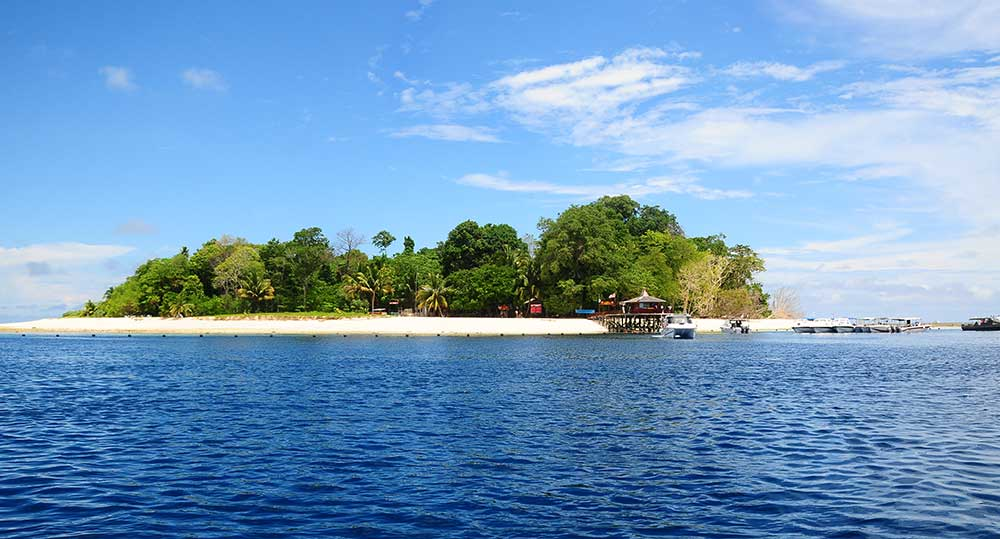

Sipadan Island, Sabah

Sipadan Island is an ocean island near Semporna, a town on the east coast of Sabah, Malaysia. Sipadan Island is the only ocean island in Malaysia made of limestone with a height of 600 meters from the seabed. Sipadan Island is known as one of the best scuba diving destinations in the world. The underwater world of Sipadan offers divers a sight full of marine life such as turtles and fish. There are many and changing colors, ledges, crevices, rock outcroppings, large caves and vertical underwater chimneys formed by various corals await to be witnessed by divers who want to enjoy the most exciting diving spots in the world. The island was established as a wildlife sanctuary in 1933 and its original environment has been maintained to this day. Visiting Sipadan Island requires a permit issued by Sabah Parks. Since 2019, there are 176 permits available each day, which are divided between the dive resorts and the dive centres.